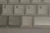
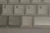
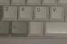

{kind=link}
{kind=link}
 
57 (F11), 58 (F12) both on a 101+ key keyboard, 59-5a-...-7f are less common.

57 (F11), 58 (F12) both on a 101+ key keyboard, 59-5a-...-7f are less common.The data from a keyboard comes mainly in the form of scancodes, produced by key presses or used in the protocol with the computer. (Different codes are used by the keyboard firmware internally, and there also exist several sets of scancodes. Here in this section we only talk about the default codes - those from translated scancode set 2. Less common modes are discussed below.) Each key press and key release produces between 0 and 6 scancodes.
Below I'll only mention the scancode for key press (`make'). The scancode for key release (`break') is obtained from it by setting the high order bit (adding 0x80 = 128). Thus, Esc press produces scancode 01, Esc release scancode 81 (hex). For sequences things are similar: Keypad-/ gives e0 35 when pressed, e0 b5 when released. Most keyboards will repeat the make code (key down code) when the key repeats. Some will also fake Shift down and Shift up events during the repeat.
The keys PrtSc/SysRq and Pause/Break are special. The former produces scancode e0 2a e0 37 when no modifier key is pressed simultaneously, e0 37 together with Shift or Ctrl, but 54 together with (left or right) Alt. (And one gets the expected sequences upon release. But see below.) The latter produces scancode sequence e1 1d 45 e1 9d c5 when pressed (without modifier) and nothing at all upon release. However, together with (left or right) Ctrl, one gets e0 46 e0 c6, and again nothing at release. It does not repeat.
See below for a report on keys with a different behaviour.
There are many reports of laptops with badly debounced key-up events. Thus, unexpected key-up events should probably be regarded as not unusual, and be ignored. Another source of key-up events without preceding key-down can be the fake shift.
Most scancodes indicate a key press or release. Some are used in the communication protocol.
| 00 | Keyboard error - see ff |
| aa | BAT (Basic Assurance Test) OK |
| ee | Result of echo command |
| f1 | Some keyboards, as reply to command a4:Password not installed |
| fa | Acknowledge from kbd |
| fc | BAT error or Mouse transmit error |
| fd | Internal failure |
| fe | Keyboard fails to ack, please resend |
| ff | Keyboard error |
Three common causes for keyboard error are: (i) several keys pressed simultaneously, (ii) keyboard buffer overflow, (iii) parity error on the serial line used by keyboard and keyboard controller for communication. The error reported is ff in scancode mode 1, and 00 in scancode modes 2 and 3. If translation is on, both 00 and ff are translated as ff.
Usually these codes have the protocol meaning. However, they also occur as actual scancodes, especially when prefixed by e0.
The codes e0 and e1 introduce scancode sequences, and are not usually used as isolated scancodes themselves (but see below).
(The prefix e0 was originally used for the grey duplicates of keys on the original PC/XT keyboard. These days e0 is just used to expand code space. The prefix e1 used for Pause/Break indicated that this key sends the make/break sequence at make time, and does nothing upon release.)
This, and the above, means that the values 00, 60, 61, 6e, 71, 7a, 7c, 7e, 7f are unavailable to signify key presses (on a default keyboard). Nevertheless they also occur as scancodes, see for example the Telerate and Safeway SW23 keyboards below.
Also other prefixes occur, see below.
Logitech uses an e2 prefix for the codes sent by a pointing device integrated on the keyboard.
The scancodes in translated scancode set 2 are given in hex. Between parentheses the keycap on a US keyboard. The scancodes are given in order, grouped according to groups of keys that are usually found next to each other.
00 is normally an error code>, 01 (Esc), 02 (1!), 03 (2@), 04 (3#), 05 (4$),
06 (5%E), 07 (6^), 08 (7&),
09 (8*), 0a (9(), 0b (0)), 0c (-_),
0d (=+), 0e (Backspace), 0f (Tab), 10 (Q), 11 (W), 12 (E),
13 (R), 14 (T), 15 (Y), 16 (U), 17 (I), 18 (O),
19 (P), 1a ([{), 1b (]}), 1c (Enter), 1d (LCtrl),
1e (A), 1f (S), 20 (D), 21 (F), 22 (G), 23 (H),
24 (J), 25 (K), 26 (L), 27 (;:), 28 ('"),
29 (`~), 2a (LShift), 2b (\|), on a 102-key keyboard, 2c (Z),
2d (X), 2e (C), 2f (V), 30 (B), 31 (N), 32 (M), 33 (,<),
34 (.>), 35 (/?), 36 (RShift), 37 (Keypad-*) or (*/PrtScn) on a 83/84-key keyboard,
38 (LAlt), 39 (Space bar), 3a (CapsLock), 3b (F1), 3c (F2), 3d (F3), 3e (F4),
3f (F5), 40 (F6), 41 (F7), 42 (F8), 43 (F9), 44 (F10), 45 (NumLock),
46 (ScrollLock), 47 (Keypad-7/Home), 48 (Keypad-8/Up), 49 (Keypad-9/PgUp), 4a (Keypad--), 4b (Keypad-4/Left), 4c (Keypad-5),
4d (Keypad-6/Right), 4e (Keypad-+), 4f (Keypad-1/End), 50 (Keypad-2/Down),
51 (Keypad-3/PgDn), 52 (Keypad-0/Ins), 53 (Keypad-./Del),
54 (Alt-SysRq) on a 84+ key keyboard,
55 is less common; occurs e.g. as F11 on a Cherry G80-0777 keyboard,
as F12 on a Telerate keyboard,
as PF1 on a Focus 9000 keyboard, and as FN on an IBM ThinkPad.
56 mostly on non-US keyboards. It is often an unlabelled key
to the left or to the right
of the left Alt key.

57 (F11), 58 (F12) both on a 101+ key keyboard, 59-5a-...-7f are less common.
Assignment is essentially random. Scancodes 55-59 occur as F11-F15 on the Cherry G80-0777 keyboard. Scancodes 59-5c occur on the RC930 keyboard. X calls 5d `KEY_Begin'. Scancodes 61-64 occur on a Telerate keyboard. Scancodes 55, 6d, 6f, 73, 74, 77, 78, 79, 7a, 7b, 7c, 7e occur on the Focus 9000 keyboard. Scancodes 65, 67, 69, 6b occur on a Compaq Armada keyboard. Scancodes 66-68, 73 occur on the Cherry G81-3000 keyboard. Scancodes 70, 73, 79, 7b, 7d occur on a Japanese 86/106 keyboard. Scancodes f1 and f2 occur on Korean keyboards.
Apart from the Pause/Break key, that has an escaped sequence starting with e1, the escape used is e0. Often, the codes are chosen in such a way that something meaningful happens when the receiver just discards the e0.
| e0 1c (Keypad Enter) | 1c (Enter) |
| e0 1d (RCtrl) | 1d (LCtrl) |
| e0 2a (fake LShift) | 2a (LShift) |
| e0 35 (Keypad-/) | 35 (/?) |
| e0 36 (fake RShift) | 36 (RShift) |
| e0 37 (Ctrl-PrtScn) | 37 (*/PrtScn) |
| e0 38 (RAlt) | 38 (LAlt) |
| e0 46 (Ctrl-Break) | 46 (ScrollLock) |
| e0 47 (Grey Home) | 47 (Keypad-7/Home) |
| e0 48 (Grey Up) | 48 (Keypad-8/UpArrow) |
| e0 49 (Grey PgUp) | 49 (Keypad-9/PgUp) |
| e0 4b (Grey Left) | 4b (Keypad-4/Left) |
| e0 4d (Grey Right) | 4d (Keypad-6/Right) |
| e0 4f (Grey End) | 4f (Keypad-1/End) |
| e0 50 (Grey Down) | 50 (Keypad-2/DownArrow) |
| e0 51 (Grey PgDn) | 51 (Keypad-3/PgDn) |
| e0 52 (Grey Insert) | 52 (Keypad-0/Ins) |
| e0 53 (Grey Delete) | 53 (Keypad-./Del) |
These escaped scancodes occur only on 101+ key keyboards. The Microsoft keyboard adds
| e0 5b (LeftWindow) |
| e0 5c (RightWindow) |
| e0 5d (Menu) |
Other escaped scancodes occur - see below under the individual keyboards.
The ten grey keys Insert, Home, PgUp, Delete, End, PgDn, Up, Left, Down, Right are supposed to function regardless of the state of Shift and NumLock keys. But for an old AT keyboard the keypad keys would produce digits when Numlock was on or Shift was down. Therefore, in order to fool old programs, fake scancodes are sent: when LShift is down, and Insert is pressed, e0 aa e0 52 is sent; upon release of Insert e0 d2 e0 2a is sent. In other words, a fake LShift-up and fake LShift-down are inserted.
If the Shift key is released earlier than the repeated key, then a real Shift-up code occurs (without preceding fake Shift-down) so that a program ignoring e0 would see one more Shift-up than Shift-down.
When NumLock is on, no fake Shifts are sent when Shift was down, but fake Shifts are sent when Shift was not down. Thus, with Numlock, if Insert is pressed, e0 2a e0 52 is sent and upon release e0 d2 e0 aa is sent. The keyboard maintains a private NumLock mode, toggled when NumLock is pressed, and set when the NumLock LED is set.
In the same way, when Shift is down, the Grey-/ key produces fake Shift-up and fake Shift-down sequences. However, it does not react to the state of NumLock. The purpose of course is to fool programs that identify Grey-/ with ordinary /, so that they don't treat Shift-Grey-/ like Shift-/, i.e., ?.
On a Toshiba notebook, the three Windows keys are treated like the group of ten keys mentioned, and get fake shifts when (left or right) Shift is down. They do not react to NumLock.
On my 121-key Nokia Data keyboard there are function keys F1, ..., F24, where F1, ..., F12 send the expected codes 3b, ..., 58, and F13, ..., F24 send the same codes together with the LShift code 2a. Thus, F13 gives 2a 3b on press, and bb aa on release. Similarly, there are keys with added LCtrl code 1d. But there are also keys with added fake shifts e0 2a.
Delorie reports that the "Preh Commander AT" keyboard with additional F11-F22 keys treats F11-F20 as Shift-F1..Shift-F10 and F21/F22 as Ctrl-F1/Ctrl-F2; the Eagle PC-2 keyboard with F11-F24 keys treats those additional keys in the same way.
On some motherboards the LCtrl-LAlt-GreyPlus and LCtrl-LAlt-GreyMinus switch Turbo mode on/off, respectively. For these, the motherboard may generate the same scancode sequence when the Turbo button is pushed: Turbo Switch (High->Low): 1d 38 4a ce b8 9d and Turbo Switch (Low->High): 1d 38 4e ce b8 9d.
Other peculiar combinations in this style include LCtrl-LAlt-LShift-GreyMinus and LCtrl-LAlt-LShift-GreyPlus to turn system cache off/on.
If Green PC system power saving mode is enabled in AMIBIOS Setup, the AMI MegaKey keyboard controller recognizes the combinations Ctrl-Alt-\ (put the system into immediate power down mode), Ctrl-Alt-[ (disable the Green PC power savings mode temporarily), Ctrl-Alt-] (enables the Green PC power down mode).
Thio Yu Jin <jin@singmail.com> complains that on his Toshiba 4010CDS
the Ctrl-Alt-Shift-T key combination brings up the Toshiba user manual.
(04 Mar 1999 - not April 1.)
Microsoft recommends: "i8042-based keyboards should deploy the following scan codes for power management buttons, i.e., POWER and SLEEP buttons:
| Set-1 make/break | Set-2 make/break | |
|---|---|---|
| Power | e0 5e / e0 de | e0 37 / e0 f0 37 |
| Sleep | e0 5f / e0 df | e0 3f / e0 f0 3f |
| Wake | e0 63 / e0 e3 | e0 5e / e0 f0 5e |
The Power, Sleep, and Wake event scan codes are the i8042 equivalents to the System Power Down, System Sleep, and System Wake Up HID usages".
Many keyboards have Power/Sleep/Wake keys that have to be activated by a fourth key (unlabeled, or labeled FN): pressing one of these four keys does not produce any scancodes, but when the FN key is pressed simultaneously, the Power/Sleep/Wake keys give the codes listed above.
Many keyboards have more keys and buttons than the standard ones. Sometimes these additional keys produce scancode combinations that were unused before. But on other keyboard such additional keys do not produce any code at all, until some initializing action is taken.
Sometimes that action consists of writing some bytes to keyboard registers. See, for example, the IBM Rapid Access keyboard, and the Omnibook keyboard.
Some keyboards have additional LEDs, and in a few cases we know how to manipulate those.
The Chicony keyboard needs command sequences eb 00 xy, with xy = 01 for the Moon LED and xy = 02 for the zzZ LED.
The IBM EZ Button keyboard needs command sequences eb 00 xy, with xy = 01 for the Msg LED, xy = 02 for the CD LED, xy = 04 for the Power LED, xy = 10 for the Talk LED, and xy = 20 for the Message Waiting LED.
The IBM Rapid Access keyboard needs command sequences eb 00 xy, with xy = 04 for the Suspend LED and xy = 20 for the Mute LED.
The IBM Rapid Access keyboard II needs the command sequences eb 71 and eb 70 to switch the Standby LED on and off.
The Logitech Internet Keyboard has an additional amber LED. It is turned on by sending eb, and then blinks about once a second. It is turned off again by ec.
Laptops have no room for all nonsensical keys one usually find on a regular keyboard. So, the number pad and other keys are folded into the main part of the keyboard. A key without label, or labelled FN is often used to modify the meaning of other keys. This FN does not produce scancodes itself, it only modifies the scancodes produced by other keys.
Neil Brown reports about his Dell Latitude D800 laptop that it has five key combinations that do not produce proper break codes. The five combinations FN+F2, FN+F3, FN+F10, FN+Down, FN+Up (labelled Wireless, Brighter, Darker, Battery, CDEject) produce make codes e0 08, e0 07, e0 09, e0 05, e0 06, respectively. The first three do not produce any break code. The last two have a break code that is identical to the make code.